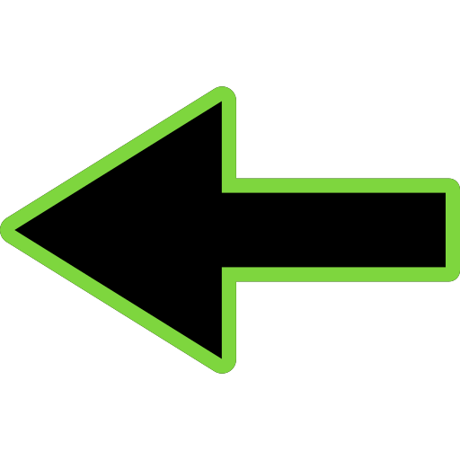
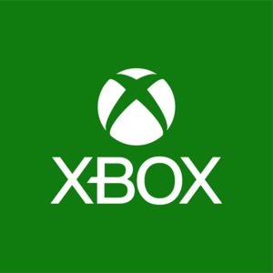
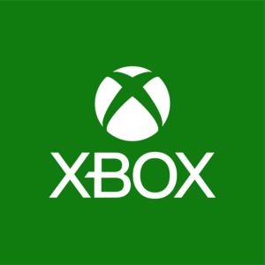

COUNTER STRIKE 1.6
El juego tiene dos equipos que te permiten tener una buena experiencia en el juego, estos son los antiterroristas y terroristas, los antiterroristas cuentan con cuatro equipos jugables: SAS, SEAL, GSG9 y GIGN su objetivo principal en el juego es acabar con el enemigo (Terroristas) así como rescatar Rehenes, evitar que planten un explosivo y en caso de que ya haya sido plantado, desactivar el mismo.
La última versión del juego es el Counter-Strike 2, una de las versiones del juego más jugado en el mundo, ante juegos más recientes, como la versión Counter-Strike: Source, basado en el motor Source, desarrollado para el juego Half-Life 2.
¿Cómo se juega?
Contrariamente a la mayoría de los juegos del género basados en el team-deathmatch, en el que los jugadores muertos resucitan inmediatamente después de la muerte, en Counter-Strike al morir deben esperar a que termine la ronda pasando a ser espectador, y vuelven a aparecer en la siguiente.
En los mapas oficiales se equipa al jugador básicamente de una pistola y de un cuchillo. El jugador también puede comprar otras armas y equipamientos útiles como un chaleco antibalas, granadas, equipos de desactivación de bombas,
anteojos de visión nocturna, etc; todo dependiendo de las condiciones del juego, durante un período limitado y en las zonas previstas a tal efecto.
Al principio del juego el jugador tiene la posibilidad de elegir su equipo: terrorista o antiterrorista dentro del límite de los lugares disponibles o elegir ser espectador.
Recuerda que lo puedes encontrar en las siguientes pltaformas. Recuerda que lo puedes encontrar en las siguientes pltaformas.
 


Haz click aquí para saber más del juego.